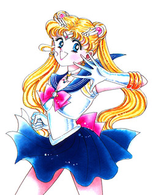
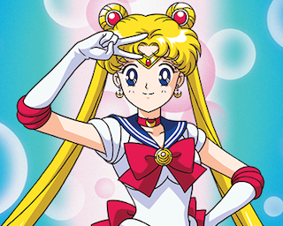

What is Sailor Moon?
Sailor Moon is the main character from an early-90's Japanese comic book (manga) series that was later adapted into an animated TV series (anime) that became famous all over the world. Movies, games, merchandise, and a recent anime reboot featuring the cast and their antics were also developed.
The story of Sailor Moon follows the life of Usagi (Serena) Tsukino as she discovers (with help from a newfound friend: a talking cat named Luna) that she is a Sailor Soldier representing Earth's Moon. As she learns more about her superheroine powers, she meets more Sailor Soldiers representing other planets in the solar system. Together they fight supernatural villans who would ruin Earth.
Is it popular?
In a word: yes. The first chapters of the Sailor Moon manga were published in 1991, and since then has sold over 35 million copies worldwide. It is one of the most famous "shojo" manga (manga written specifically for teenage girls) of all time. American fans know it best as an animated series (anime) that was broadcast on cable channel Cartoon Network during its weekday afternoon programming block, Toonami.